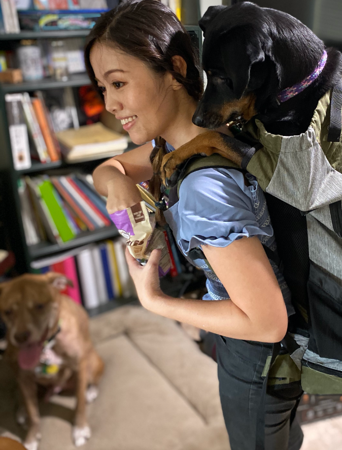

Born in Japan, raised as the only child in a nomadic researcher family, I moved 8 times across the Pacific or the Atlantic Ocean throughout my childhood. I have stayed in the USA since high school for roughly 20 years now but this frequent moving experience made me very skilled with quickly adapting to a new environment, and picking up on non-verbal cues.
What drives me is the opportunity to be creative with solutions for those in need - and as a certified music therapist, I have professionally used music and instruments as tools to problem solve those with therapeutic needs. Ever since 2012, when I decided to learn programming to create a GUI to collect music therapy patients’ data for their patterned rhythmic responses, I have been hooked with the idea of providing “repeatable” resources and tools via the web browser.
Now with more than 5 years of experience creating websites for the community, I am happy to help those in need of an updated website! I haven't lost interest in my former gig of teaching piano either, however, relocating from Houston to Seattle means I have a fresh new start. I have not done freelancing in a while, but I am excited for what's to come and would love to get involved with opportunities to lend my expertise!
User interviews, User Testing, Affinity Diagram, Empathy Map and User Persona development, Heuristic Evaluation, Journey Map and Story Board creation, Site Map, Task and User Flow development, Card Sorting, Wireframing and Prototyping.
Building rapport, behavioral observation and analysis, general friendliness, critical thinking, giving constructive feedback/supervision, team oriented, confidence with adaptability and resilience. Mindful of cultural differences and accessibility for those with special needs.
HTML/CSS/JavaScript Angular(2+), Vue.js, Next.js, pug, ejs, Express, Node.js, Python, Sphinx, Plotly(JS), Flask Currently working on getting comfortable with React and Electron.
Adobe XD, InVision, Miro Board, Figma, Adobe Draw, Photoshop, Illustrator, Final Cut Pro
VS Code, Chrome Developer Tool, Postman, git, npm, DynamoDB, Firebase, Docker